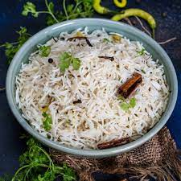

Butter Naan
Soft and fluffy Indian flatbread brushed with butter, perfect for soaking up rich curries and gravies.
Ingredients:
- Flour
- Butter
- Yogurt
- Yeast
- Water
- Salt
Preparation Time:
2 hours (includes dough rising time)
Serving Suggestions:
Best served with butter chicken or paneer tikka masala.

Curd Rice
A comforting South Indian dish made with rice and yogurt, often tempered with spices and garnished with coriander.
Ingredients:
- Rice
- Yogurt
- Mustard Seeds
- Curry Leaves
- Green Chilies
- Salt
Preparation Time:
30 minutes
Serving Suggestions:
Enjoy with pickle and papadam.

Jeera Rice
Aromatic basmati rice cooked with cumin seeds and ghee, a simple yet flavorful side dish.
Ingredients:
- Basmati Rice
- Cumin Seeds
- Ghee
- Onion
- Salt
- Water
Preparation Time:
25 minutes
Serving Suggestions:
Perfect with dal makhani or any curry.